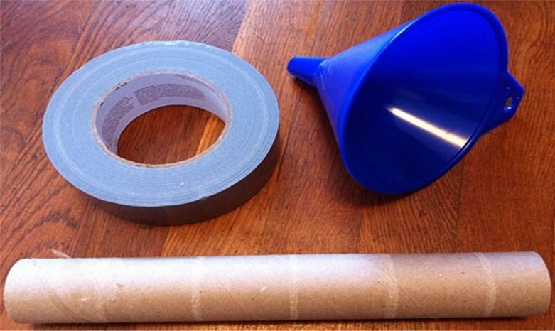

سرگرمی:
اپنی نابینا جگہ تلاش کریں!
خلاصہ:
تعارف:
کیا آپ جانتے ہیں کہ آپ کی آنکھ میں ایک اندھا دھبہ ہے؟ درحقیقت، ہر شخص کی ہر آنکھ میں ایک ناگزیر اندھا دھبہ ہوتا ہے۔ اس کا مطلب یہ نہیں ہے کہ آپ کو اپنے نقطہ نظر کے میدان میں ایک مستقل سیاہ دھبہ نظر آتا ہے۔ عام طور پر آپ کو ان بلائنڈ دھبوں کو بالکل بھی نظر نہیں آتا، تاہم کچھ طریقے ہیں کہ آپ ان بلائنڈ دھبوں کو کیسے مرئی بنا سکتے ہیں۔ یہ سرگرمی آپ کو دکھائے گی کہ انہیں کیسے تلاش کیا جائے۔ آپ انہیں ڈھونڈ سکتے ہیں یا نہیں؟
مواد:
- کارڈ اسٹاک کا کاغذ
- قینچی
- حکمران یا ماپنے والی ٹیپ
- مارکر یا قلم
تیاری کا کام:
- کارڈ اسٹاک سے 2 انچ اونچا اور 5 انچ لمبا کاغذ کاٹ لیں۔
- کاغذ کی پٹی کے بائیں جانب، ایک شکل کھینچیں جیسے دائرہ، دل یا جمع کا نشان۔ شکل آدھے انچ سے زیادہ چوڑی نہیں ہونی چاہیے۔

- کاغذ کی پٹی کے دائیں جانب ایک اور شکل کھینچیں۔ یہ بھی آدھے انچ سے زیادہ چوڑا نہیں ہونا چاہیے۔
طریقہ کار
- اپنے دائیں ہاتھ میں کاغذ کی پٹی لیں۔ اسے درمیان میں رکھیں تاکہ آپ ہر کونے میں دونوں شکلیں دیکھ سکیں۔
- آنکھوں کی سطح پر کاغذ کی پٹی کے ساتھ اپنے بازو کو پھیلائیں۔ اپنی آنکھوں کو بائیں شکل پر مرکوز کریں۔
آپ کی آنکھیں اب بھی بائیں جانب مرکوز ہیں، کیا آپ اب بھی کاغذ کی پٹی کے دائیں جانب کی شکل دیکھ سکتے ہیں؟
- . آہستہ آہستہ اپنے بڑھے ہوئے بازو کو اپنے چہرے کے قریب لے جائیں۔ کاغذ کو قریب کرتے ہوئے، اپنی آنکھوں کو بائیں شکل پر مرکوز رکھیں۔
کارڈ کو قریب لے جانے کے دوران، کیا آپ اب بھی دونوں شکلیں واضح طور پر دیکھ سکتے ہیں؟
- اپنی بائیں آنکھ کو اپنے بائیں ہاتھ سے ڈھانپیں۔ کاغذ کی پٹی کے ساتھ دائیں بازو کو دوبارہ آنکھ کی سطح پر پھیلائیں۔ اپنی دائیں آنکھ کو بائیں شکل پر مرکوز کریں۔
کیا آپ دوسری شکل بھی دیکھ سکتے ہیں؟
- اپنی بائیں آنکھ کو ڈھانپ کر اور اپنی دائیں آنکھ بائیں شکل پر فوکس کرتے ہوئے، کاغذ کی پٹی کو آہستہ آہستہ اپنے چہرے کی طرف لے جائیں۔ اپنی دائیں آنکھ کو بائیں شکل پر مرکوز رکھیں۔
جب آپ کاغذ کی پٹی کو قریب کرتے ہیں تو کاغذ کی پٹی کے دائیں طرف کی شکل کا کیا ہوتا ہے؟
- اب اپنی دائیں آنکھ کو اپنے دائیں ہاتھ سے ڈھانپ لیں۔ کاغذ کی پٹی کے ساتھ اپنے بائیں بازو کو بڑھائیں اور صحیح شکل کو دیکھیں۔
کیا آپ اپنی بائیں آنکھ سے دائیں شکل پر توجہ مرکوز کرتے ہوئے اب بھی بائیں شکل دیکھ سکتے ہیں؟
- دوبارہ، آہستہ آہستہ کاغذ کے ٹکڑے کو اپنے قریب لے جائیں۔ اپنی بائیں آنکھ کو صحیح شکل پر مرکوز رکھیں۔
آپ اس بار کیا محسوس کرتے ہیں؟
سرگرمی:
افٹر امیجز: دی کلر فل ٹرکس آئیز پلے۔
خلاصہ:
تعارف:
کیا آپ نے کبھی سوچا ہے کہ بصری وہم کیسے بنتے ہیں؟ جب ہم فلموں، یا جادوئی شو میں خصوصی اثرات دیکھتے ہیں، تو ہم اکثر وہموں کا مشاہدہ کرتے ہیں جو چیزوں کو صحیح طریقے سے سمجھنے کی ہماری صلاحیت کو چیلنج کرتے ہیں۔ ایک طریقہ جس میں ہماری آنکھیں ہم پر چالیں چلتی ہیں وہ ہے بعد کی تصاویر۔ افٹر امیجز وہ تصاویر ہیں جو آپ کسی چیز کو کئی سیکنڈ تک گھورنے اور پھر دور دیکھنے کے بعد دیکھتے ہیں۔ اس سائنسی سرگرمی میں، آپ اس راز کو ظاہر کرنے کے لیے بعد کی تصاویر کو دیکھیں گے کہ آپ کی آنکھیں کیسے رنگ دیکھتی ہیں۔
مواد:
- کلر مانیٹر یا کلر پرنٹر اور کاغذ کے ساتھ کمپیوٹر
- سٹاپ واچ یا گھڑی جو سیکنڈ دکھاتی ہے۔
- اختیاری: رنگین پنسل اور کاغذ یا بنیادی کمپیوٹر گرافکس پروگرام
تیاری کا کام:
اس سرگرمی کو کرنے کے لیے، آپ کو رنگین دائرے کے نیچے کی تصویر دیکھنے کی ضرورت ہوگی۔ اس کی وجہ سے آپ کو تصویر دکھانے کے لیے کلر مانیٹر والے کمپیوٹر تک رسائی کی ضرورت ہوگی، یا آپ اسے رنگین پرنٹر پر پرنٹ کر سکتے ہیں۔
طریقہ کار:
- اگر کمپیوٹر مانیٹر یا اس سرگرمی کے پرنٹ آؤٹ کے بالکل ساتھ کوئی لائٹس موجود ہیں تو لائٹس بند کردیں۔
- 30 سیکنڈ کے لیے رنگین حلقوں کی تصویر (مرکز میں چھوٹے سفید دھبے پر توجہ مرکوز کرتے ہوئے) دیکھیں۔
- دائرے کو 30 سیکنڈ تک گھورنے کے بعد، اس کے دائیں جانب سفید جگہ کو دیکھیں۔
کیا دیکھتے ہو؟ بعد کی تصویر کے ہر حصے کے رنگ اصل رنگین دائرے کے حصوں سے کیسے مختلف ہیں؟
- اختیاری: آپ اپنے نتائج نکالنے کے لیے رنگین پنسل اور کاغذ یا بنیادی کمپیوٹر گرافکس پروگرام استعمال کر سکتے ہیں۔
- بنیادی رنگوں (سرخ، نیلے، اور سبز) اور ان کے ثانوی رنگوں (پیلا، جامنی/میجنٹا اور سیان) کے بارے میں سوچتے ہوئے، اور بعد کی تصاویر کیسے بنتی ہیں، دیکھیں کہ کیا آپ اپنے نتائج کی وضاحت کر سکتے ہیں۔
آپ کو کیوں لگتا ہے کہ آپ تصویر کے بعد کے رنگ دیکھتے ہیں جو آپ کرتے ہیں؟
سرگرمی:
اپنا اپنا سٹیتھوسکوپ بنائیں
خلاصہ:
تعارف:
کیا آپ نے کبھی سوچا ہے کہ جب ہم شدت سے ورزش کرتے ہیں تو دل پر کیا گزرتی ہے؟ اس کی دھڑکن کیسے بدلتی ہے؟ ایک ڈاکٹر سٹیتھوسکوپ نامی ایک آلے کا استعمال کرکے اس کا پتہ لگا سکتا ہے، جو ایک لمبی، پتلی پلاسٹک کی ٹیوب ہے جس کے ایک سرے پر ایک چھوٹی ڈسک اور دوسرے سرے پر کان کے ٹکڑے ہوتے ہیں۔ اس سرگرمی میں، آپ گھر میں سٹیتھوسکوپ بنائیں گے اور اسے آرام کے وقت اور ورزش کے بعد لوگوں کے دل کی دھڑکن کی پیمائش کرنے کے لیے استعمال کریں گے۔
مواد:
- ڈکٹ ٹیپ یا دیگر مضبوط ٹیپ
- قینچی
- پلاسٹک کا چمنی
- کاغذ کے تولیہ کے رول سے گتے کی ایک ٹیوب
- سٹاپ واچ یا گھڑی جو سیکنڈ شمار کرتی ہے۔
- ایک رضاکار جو محفوظ طریقے سے ایک منٹ تک شدید ورزش کر سکتا ہے۔

طریقہ کار:
- فنل کے تنگ سرے کو گتے کی ٹیوب میں ڈالیں۔
- ڈکٹ ٹیپ یا دیگر مضبوط ٹیپ کی پٹی کا استعمال کرتے ہوئے، فنل اور گتے کی ٹیوب کو ایک ساتھ ٹیپ کریں۔ اس بات کو یقینی بنائیں کہ کوئی خلا یا خالی جگہ نہیں ہے جہاں آپ انہیں ایک ساتھ ٹیپ کریں۔
- آپ کا سٹیتھوسکوپ اب استعمال کے لیے تیار ہے! رضاکار کے سینے کے بائیں جانب فنل رکھ کر رضاکار کے دل کی دھڑکن سننے کی مشق کریں۔ یقینی بنائیں کہ چمنی ان کے سینے کے خلاف چپٹی ہے۔ اپنے کان کو گتے کی ٹیوب کے آخر میں سوراخ کے خلاف رکھیں۔ کیا آپ کو دل کی دھڑکن سنائی دیتی ہے؟
- مشورہ: اگر شور ہو یا رضاکار موٹے کپڑے پہنے ہوئے ہو، تو دل کی دھڑکن سننے میں مشکل ہو سکتی ہے، اس لیے آپ کو حالات کے مطابق ایڈجسٹ کرنے کی ضرورت پڑ سکتی ہے۔
- رضاکار کے چند منٹوں کے لیے کرسی پر آرام کرنے کے بعد، دل کی دھڑکن کو سنیں اور گنیں کہ یہ 10 سیکنڈ میں کتنی بار دھڑکتا ہے۔
- ۔ اس نمبر کو چھ سے ضرب دیں۔ یہ دھڑکن فی منٹ (bpm) میں رضاکار کے آرام کرنے والی دل کی شرح ہے۔
رضاکار کے آرام کرنے والے دل کی شرح کیا ہے؟
- رضاکار سے جمپنگ جیک کرکے یا جگہ پر دوڑ کر ایک منٹ کے لیے جگہ پر ورزش کرنے کو کہیں۔ رضاکار کے ورزش کرنے کے فوراً بعد، دل کی دھڑکن کو سنیں اور گنیں کہ یہ 10 سیکنڈ میں کتنی بار دھڑکتا ہے۔
آپ کو کیوں لگتا ہے کہ آپ صرف 10 سیکنڈ کے لیے دل کی دھڑکنیں گنتے ہیں؟ اگر آپ ورزش کرنے کے بعد طویل عرصے تک شمار کرتے ہیں تو کیا ہوتا ہے؟
- اس نمبر کو چھ سے ضرب دیں۔ یہ bpm میں ورزش کرنے کے فوراً بعد دل کی دھڑکن ہے۔
رضاکار کے دل کی دھڑکن اب کیا ہے؟ ورزش کے بعد دل کی دھڑکن کیسے بدلی؟ آپ کو ایسا کیوں لگتا ہے جیسے یہ بدل گیا تھا؟
- اس بارے میں سوچیں کہ باقاعدگی سے ورزش کرنے سے انسان کا دل کیسے بدل سکتا ہے۔ اگر کوئی شخص باقاعدگی سے ورزش کرتا ہے، تو آپ کے خیال میں اس سے اس کے دل کی دھڑکن کیسے بدل جائے گی؟ آپ کے خیال میں آرام اور ورزش کے دوران اس شخص کے دل کی دھڑکن کس طرح مختلف ہوگی؟
سرگرمی:
فلپ بکس میں ظاہری حرکت
خلاصہ:
تعارف:
کیا آپ کو کبھی کسی نظری وہم نے دھوکہ دیا ہے؟ بصری بھرم تفریحی ہو سکتا ہے، لیکن وہ کافی سائنسی بھی ہیں۔ اس سرگرمی میں آپ اپنی فلپ بک اینیمیشن بنا کر ظاہری حرکت کے رجحان کی چھان بین کریں گے۔
مواد:
- 25 لائن والے 3 X 5 انچ انڈیکس کارڈز (یا 50 3 X 2.5 انچ کارڈز کارڈ اسٹاک سے کاٹے گئے)
- قینچی
- دو بائنڈر کلپس
- رنگین مارکر، ہائی لائٹر، پنسل یا کریون
- رضاکار
تیاری کا کام:
- 50 آدھے سائز کے کارڈز (3 X 2.5 انچ) بنانے کے لیے لائن والے انڈیکس کارڈز کو احتیاط سے آدھے حصے میں کاٹ دیں۔ کارڈز کو جتنا ممکن ہو سکے نصف میں یکساں طور پر کاٹنے کی کوشش کریں۔ اگر آپ کارڈ اسٹاک کے ساتھ شروع کرتے ہیں، تو 3 X 2.5 انچ کے 50 کارڈز کاٹ دیں۔
- کارڈز کو 25 کارڈوں کے دو ڈھیروں میں تقسیم کریں۔
- ڈھیروں میں سے ایک پر، اوپری لائن کے دائیں سرے پر اوپر والے کارڈ پر ایک چھوٹا سا دائرہ (تقریباً ¼ انچ قطر) کھینچیں۔ اسی اسٹیک میں اگلے کارڈ پر، ایک جیسے سائز کا دائرہ بالکل دائیں طرف کھینچیں، لیکن اگلی لائن کی جگہ پر نیچے۔ ہر کارڈ پر دائرے بنانا جاری رکھیں، ہر بار پچھلے کارڈ پر دائرے کے بالکل نیچے لائن اسپیس پر، جب تک کہ آپ کارڈ کے نیچے نہ پہنچ جائیں۔ اگر آپ کے کارڈز میں لائنیں نہیں ہیں، تو کارڈ کے اوپر سے پہلا دائرہ ¼ انچ، دوسرا اوپر سے ½ انچ، اوپر سے تیسرا ¾ انچ اور اسی طرح، ہر بار ¼ انچ مزید نیچے کھینچیں جب تک کہ آپ نیچے تک نہ پہنچ جائیں۔ کارڈ کے.
- پھر اگلے کارڈ پر پچھلے دائرے (یا ¼ انچ اوپر) سے اگلی لائن کی جگہ پر ایک دائرہ (صرف دائیں طرف) کھینچیں اور اسے اس وقت تک جاری رکھیں جب تک کہ آپ کارڈ کے اوپر نہ پہنچ جائیں۔
- اس پورے پیٹرن کو دہرائیں (کارڈز کے دائیں کنارے پر اوپر اور نیچے جانے والے "متحرک نقطوں" کی ایک سیریز بناتے ہوئے) جب تک آپ اسٹیک کے آخر تک نہ پہنچ جائیں۔
- دوسرے اسٹیک پر، اوپری لائن کے بالکل دائیں سرے پر اوپر والے کارڈ پر دوبارہ ایک چھوٹا سا دائرہ کھینچیں۔ اسٹیک میں اگلے کارڈ پر، ایک جیسے سائز کا دائرہ دائیں طرف کھینچیں، لیکن چار لائن خالی جگہیں نیچے (تین لائن خالی جگہوں کو چھوڑ کر)۔ اگلے کارڈ پر، پچھلے دائرے سے نیچے چار لائن کی جگہوں پر ایک دائرہ کھینچیں۔ اگر آپ کے کارڈ میں لائنیں نہیں ہیں تو، کارڈ کے اوپری حصے سے ¼ انچ، دوسرے کارڈ پر اوپر سے 1¼ انچ، اور تیسرے کارڈ پر، کارڈ کے اوپر سے 2¼ انچ کی دوری پر ایک دائرہ بنائیں۔
- پھر، اس اسٹیک میں اگلے کارڈ پر، پچھلے دائرے سے چار لائن خالی جگہوں پر ایک دائرہ کھینچیں (صرف دائیں طرف) اور اسے اس وقت تک جاری رکھیں جب تک کہ آپ کارڈ کے اوپر نہ پہنچ جائیں۔
- اس پورے پیٹرن کو اس وقت تک دہرائیں جب تک کہ آپ دوسرے اسٹیک کے آخر تک نہ پہنچ جائیں۔
- ہر ڈیک کو صفائی سے اسٹیک کریں۔ ہر کارڈ کے اسٹیک کے دائرے والے کنارے کو چپٹی سطح پر تھپتھپائیں تاکہ کارڈ کا کوئی بھی کنارہ اسٹیک میں موجود باقی حصوں سے باہر (یا اندر) چپکا نہ جائے۔
- ہر اسٹیک کے مخالف کنارے پر ایک بائنڈر کلپ کو تراشیں۔
طریقہ کار:
- ایک لمحے میں آپ اپنی فلپ بکس کے ذریعے پلٹ جائیں گے۔
آپ کے خیال میں پلٹ جانے پر فلپ بکس کیسی نظر آئیں گی؟ کیا ان میں فرق ہوگا؟
- دونوں فلپ بکس کو پلٹائیں تاکہ یہ یقینی بنایا جا سکے کہ پلٹتے وقت تقریباً ہر کارڈ دکھائی دیتا ہے۔ اگر ضرورت ہو تو، کلپ کو ہٹا دیں، کارڈز کے کناروں کو دوبارہ تھپتھپائیں تاکہ دائرہ دار کناروں پر بالکل ٹھیک ہو جائیں، اور کلپ کی جگہ لے لیں۔
کیا آپ کی پیشین گوئی درست تھی؟ آپ کے خیال میں ایسا کیوں ہوتا ہے؟
- کسی رضاکار سے پہلی فلپ بک کے ذریعے پلٹنے کے لیے کہیں، جس میں کارڈز کے درمیان کوئی لائن خالی جگہ نہیں چھوڑی گئی ہے، اور پھر دوسری فلپ بک کو پلٹائیں۔
رضاکار کو، کیا ایسا لگتا ہے کہ حلقے کارڈ کے نیچے کی طرف جاتے ہیں، پھر واپس اوپر کی طرف، اور اسی طرح، اسٹیک کے کنارے کے ساتھ اوپر اور نیچے جاتے ہیں؟ یا کیا دائرہ مختلف انداز میں حرکت کرتا نظر آتا ہے، جیسے اُدھر اچھلنا یا چمکنا؟
- دوسرے رضاکاروں کو ہر فلپ بک کے ذریعے پلٹائیں اور اس ترتیب کو الٹ دیں جس میں آپ جب بھی رضاکار کو تبدیل کرتے ہیں تو فلپ بکس دکھاتے ہیں۔
ہر فلپ بک کے لیے، کیا رضاکار سوچتا ہے کہ حلقے کارڈ کے نیچے، پھر واپس اوپر، وغیرہ کی طرف بڑھتے ہیں؟ یا وہ سمجھتے ہیں کہ حلقہ کچھ اور کر رہا ہے؟
- نظری وہم جہاں آپ کسی چیز کو حرکت کرتے ہوئے محسوس کرتے ہیں جبکہ درحقیقت آپ اپنی آنکھوں کے سامنے بہت سی ساکن تصویریں تیزی سے چمکتے ہوئے دیکھ رہے ہوتے ہیں اسے ظاہری حرکت کہتے ہیں۔
آپ کے خیال میں رضاکاروں کے جوابات کا تعلق ظاہری حرکت سے ہے یا ہم حرکت کو کیسے سمجھتے ہیں؟
- اس سرگرمی میں آپ نے جانچا کہ آیا اشیاء کے درمیان فاصلہ ظاہری حرکت پر اثرانداز ہوتا ہے، لیکن دیگر متغیرات ہیں جن کی آپ جانچ کر سکتے ہیں، جیسے کہ فلپ بکس کو پلٹنے کی رفتار اور دائروں کا سائز۔ آپ یہ بھی جانچ سکتے ہیں کہ جب آپ کارڈز کو بڑا کرتے ہیں تو کیا ہوتا ہے۔
فلپ بک میں کارڈز کو تیزی سے یا آہستہ پلٹنا آپ کے نتائج کو کیسے متاثر کرتا ہے؟ کیا بڑے یا چھوٹے حلقوں کا استعمال آپ کے نتائج کو تبدیل کرتا ہے؟ بڑے کارڈز کے بارے میں کیا خیال ہے؟
- اپنے ٹیسٹ کے نتائج سے لیس، فلپ بک میں ایک چھوٹی کہانی سنائیں۔ ہوسکتا ہے کہ آپ ایک راکٹ بلاسٹ آف، ایک پرندے کو اپنے پر پھڑپھڑاتے ہوئے، یا ایک بچے کے بچے کی تصویر کشی کرنا چاہتے ہوں۔